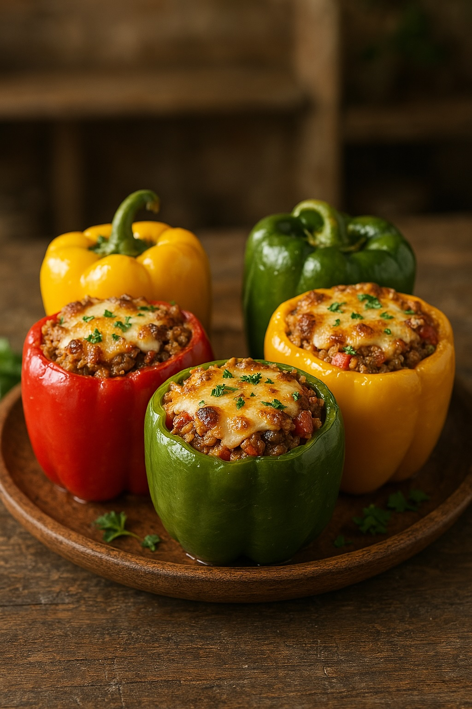

Stuffed Bell Peppers Recipe

Bell peppers filled with a savory mixture of ground meat, rice, and tomatoes, baked to perfection.
Stuffed Bell Peppers are a delicious and nutritious meal made with tender bell peppers packed with a hearty mixture of ground meat, rice, tomatoes, and seasonings, then baked until perfectly tender and flavorful.
Ingredients
- For the Peppers:
- 4 large bell peppers (any color), tops removed, seeds removed
- For the Filling:
- 1 lb ground beef or turkey
- 1 small onion, diced
- 2 cloves garlic, minced
- 1 cup cooked rice
- 1 can (15 oz) diced tomatoes, drained
- 1 cup tomato sauce
- 1 tsp Italian seasoning
- ½ tsp salt
- ½ tsp black pepper
- ½ cup shredded mozzarella or cheddar cheese (for topping)
Instructions
- Prepare the Peppers
- Preheat oven to 375°F (190°C).
- Cut the tops off the bell peppers and remove the seeds and membranes.
- Place the peppers upright in a baking dish.
- Make the Filling
- In a skillet over medium heat, cook the ground meat until browned. Drain excess fat.
- Add onion and garlic, cooking until softened, about 3 minutes.
- Stir in cooked rice, diced tomatoes, tomato sauce, Italian seasoning, salt, and black pepper.
- Cook for 5 more minutes, then remove from heat.
- Stuff and Bake
- Spoon the filling evenly into the hollowed-out bell peppers.
- Cover with foil and bake for 25 minutes.
- Remove foil, sprinkle cheese on top, and bake for another 10-15 minutes until cheese is melted.
- Serve warm and enjoy!
Home